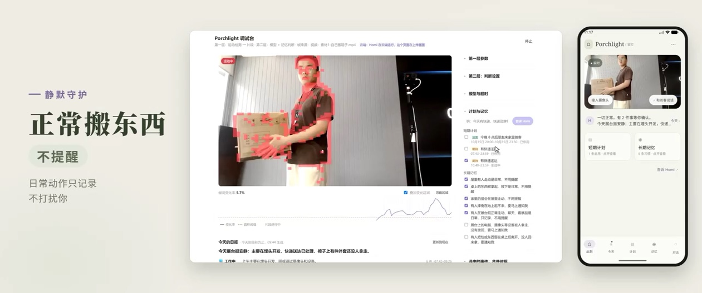
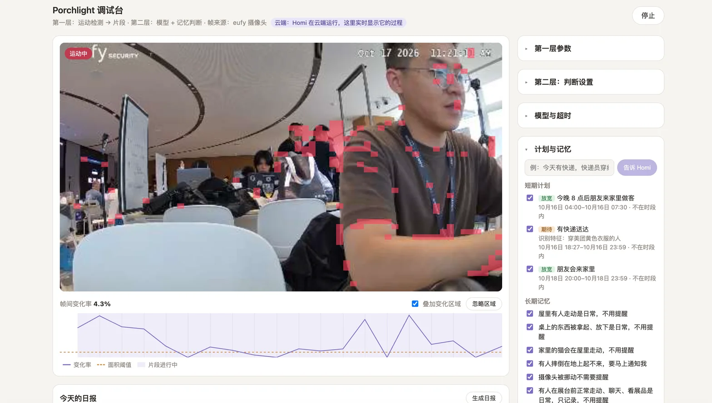
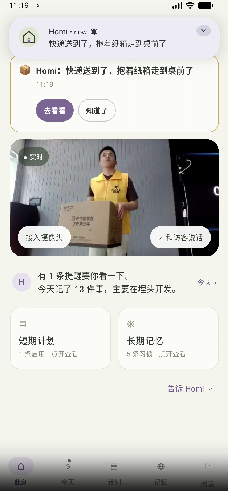
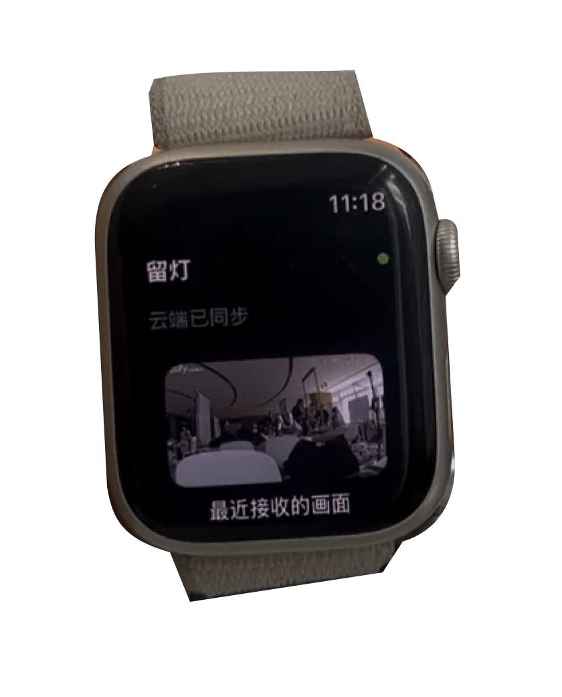

01Overview
留灯 Porchlight：让一次查看，有一个结果。
留灯面向出门后仍牵挂家中情况的人，把摄像头画面、用户安排和需要关注的事件连起来。目标是先看见依据、理解发生了什么，再决定是否处理，而不是让用户持续盯着监控。
用户提供的 58 秒项目演示：日常活动、送达提醒与手表速览。02The Problem
看得到画面，不代表已经得到答案。
门锁、水电是最初的生活动机；比赛阶段收敛到可观察的送达场景：有人正常活动时少打扰，有包裹送到时请用户看一眼。门锁、水电状态仍需相应设备支持。
- 判断负担
- 监控提供了画面，用户仍要判断这是正常活动，还是需要处理的事。
- 重复寻找
- 换到手机或手表后，用户不应再重新寻找同一件事的来龙去脉。
- 可信依据
- 摘要之外保留画面、时间与连接状态，让用户有机会核查和纠正。
03Design Decisions
三个设计方向，围绕一次有依据的确认。
A从变化检测，到有上下文的提醒
正常活动：记录，但不反复打扰
视频 00:19 展示“正常搬东西，不提醒”。

演示片段 · 日常活动直接截自用户视频 00:19；画面中的“不提醒”是演示呈现，不作为误报率或算法准确率测试。送达提醒：带着依据请用户看一眼
视频 00:29 展示快递送达，Web 与手机端出现提醒。
 演示片段 · 快递送达直接截自用户视频 00:29。提醒与关键画面一起出现；不将录像视为完整跨端确认闭环的验收。
演示片段 · 快递送达直接截自用户视频 00:29。提醒与关键画面一起出现；不将录像视为完整跨端确认闭环的验收。- 设计判断
- 一般变化先记录；只有与计划或习惯相关、需要关注的变化才升级为提醒。
- 用户控制
- 包裹被拿走但未确认时，保持“待核实”；先呈现证据，而不是直接判定被盗。
B三端各有任务，信息来自同一处
Web · 总览与联调
总览画面、事件和时间线；采集与调试另有工程入口。

桌面运行素材 · 采集与判断调试台来自比赛展示素材，保留 eufy 画面、变化曲线及计划／记忆设置。调试台是工程验证工具，不作为最终用户首页。iPhone · 展开详情与编辑
在更完整的屏幕中查看经过、修改计划与记忆，再作确认。

手机端 · 历史展示画面来自三端展示素材，能看到提醒、画面、短期计划与长期记忆。这是当时的展示形态；归档原生工程的四页结构另见交互说明。手机端交互原型
可操作 · HTML 原型
原始中文 HTML 交互稿。可查看计划、记忆、事件与反馈；设备连接和跨端移交为演示，不会操作真实设备。
单独打开完整原型 ↗Apple Watch · 短时查看，不塞入完整管理页
视频末段展示手表上的轻量查看；实体设备素材保留最近画面与云端状态。

手表设备实拍 · 最近接收的画面来自比赛展示素材。手表直接连接云端，适合查看缩略画面、时间和简短提醒；不依赖手机转发。手表交互原型
可操作 · HTML 原型
直接点击表内页面，查看快照、事件、计划与反馈。离线／恢复按钮沿用原型逻辑，不连接设备或麦克风。
单独打开完整原型 ↗C让 AI 的理解可修改，让状态可信
计划与记忆：先给用户确认权
从“管理功能”转向“表达预期”，并保留直接编辑。
- 迭代
- 早期首页偏向管理台；根据团队讨论，将 Web 收敛到画面、提示、两个入口与底部输入，编辑按需打开。
- 原生实现
- 归档 iPhone 工程按“此刻、计划、记忆、对话”组织任务。模型建议转成计划或记忆前，需在表单中确认。
断线与旧画面：不把“最近一次”伪装成“现在”
让恢复过程、更新时间和前后台行为与实际状态一致。
- 恢复逻辑
- 前台自动重试；40 秒无推送心跳时重连；超过 15 秒无新画面时取消实时标识；后台暂停。
- 画面形式
- 手机与手表约每 5 秒接收 JPEG 更新，不是连续音视频直播。
04The System
先跑通画面链路，再核对事件闭环。
摄像头经 Chrome 采集页上传画面与片段，云端统一维护状态，并用 SSE／HTTPS 向查看端提供更新。三端共享信息来源，但不因此自动证明每种操作都已同步完成。
图 01 · 数据与交互链路eufy 摄像头
Chrome 采集
共享云端
Web / iPhone / Watch
- 产品与交互
- 我负责梳理场景、需求与三端分工，完成可交接的交互稿，把“少打扰”落实到页面与操作。
- 工程与联调
- 承担全栈及三端开发相关工作，推进摄像头、云端、手机和手表的连接与恢复。算法与设备集成属于团队分工，不归为我单独实现。
- 路演与表达
- 整理“离家后的疑问—画面依据—事件—确认”的叙事，制作三端展示材料，并代表团队路演。
05Outcomes
把展示、实现和验收分别说清。
- 设备链路
- 历史联调记录确认手机、手表收到真实画面且时间更新；视频补充展示日常活动、快递提醒与手表查看。
- 完整事件
- 快递／外卖识别、用户确认、跨端一致更新与归档的完整业务闭环仍需逐步验收。
- 团队成果
- 团队于 2026 年 10 月入围 Anker 黑客松总决赛；比赛结果属于团队。
查看项目材料与交接记录
06Reflection & Scope
把复杂留给系统，把依据留给用户。
- 少打扰，是信息筛选的取舍
不把每一次变化都升级成警报；事件应有上下文，也应允许用户纠正。
- 跨端一致，不等于页面相同
电脑、手机与手表在不同场合承接不同深度的操作，关键是不用重新找同一条线索。
资料来自比赛时期的演示、需求与 2026.10.17 交接快照。归档不是当前线上代码镜像；最新手表重连版安装、Siri 唤起、锁屏推送与完整事件闭环不在已完成结论中。当前没有可引用的用户效果数据。
 EN
EN